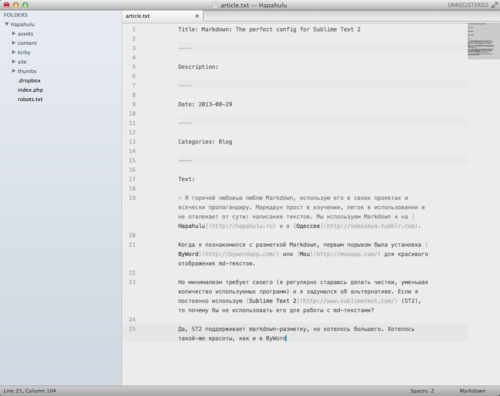
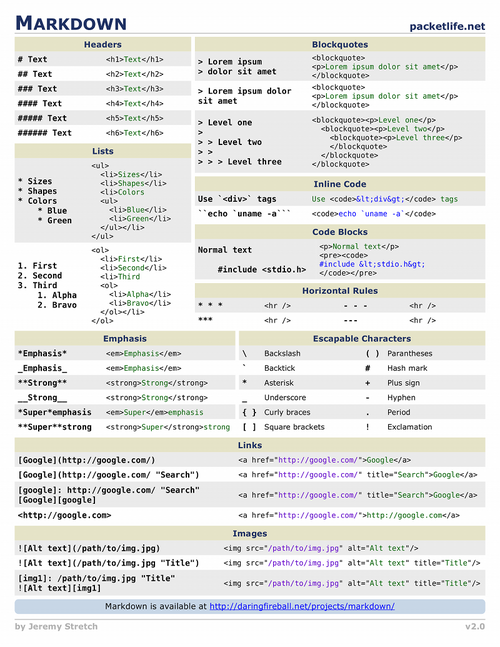

Я горячей любовью люблю Markdown, использую его в своих проектах и всячески пропагандирую. Маркдаун прост в изучении, легок в использовании и не отвлекает от сути: написания текстов. Мы пишем тексты на Markdown и на Hapahulu и в Одессее.
Когда я познакомился с разметкой Markdown, первым порывом была установка ByWord для красивого визуального отображения md-текстов.
Но минимализм требует своего (я регулярно стараюсь делать чистки, уменьшая количество используемых программ) и я задумался об альтернативе. Если я постоянно использую Sublime Text 2 (ST2), то почему бы не использовать его для работы с md-текстами?
Да, ST2 поддерживает markdown-разметку, но хотелось большего. Хотелось такой-же красоты, как и в ByWord. И это возможно!
Для ST2 существует плагин Markdown Editing, который добавляет все необходимые инструменты для работы с markdown: подсветкой md-тегов, горячие клавиши и приятная тема страницы.

Устанавливается плагин проще простого: через
Package Control. У вас нет Package Control в
Command Palette?
Решите этот вопрос!
Настройки плагина незатейливы.
{
"font_size": 12, # размер шрифта
"wrap_width": 76 # ширина колонки
}
Горячие клавиши просты и легко запоминаются:
⌘⌥V (Ctrl+Win+V) вставляет
содержимое клипборда, как ссылку для выделенного текста
⌘⌥K (Ctrl+Win+K) вставляет
ссылку
⌘⇧K (Shift+Win+K) вставляет
изображение
⌘⌥B и
⌘⌥I (Alt+Win+B и
Alt+Win+I) делают текст полужирным и курсивом
соответственно
⌘^1 ..
⌘^6 (Ctrl+1 ..
Ctrl+6) выводят соответствующее количество диезов (#) для
заголовков. Если выделена часть строки — диезы ставятся перед этой
подстрокой.
Также есть возможность настроить предпросмотр результата текста в html-виде, но я не вижу в этом необходимости.
Писать, используя Markdown, в ST2 не только просто, но и красиво.
